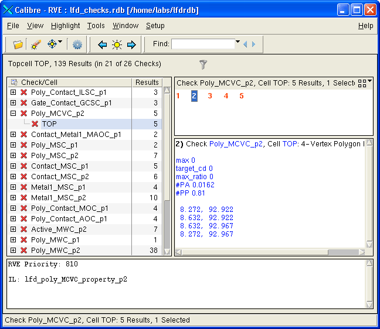

You can use Calibre
RVE to view the Calibre LFD check results.
One of the primary outputs of Calibre LFD
checking is a Check Database. This database references areas
of the design that are most likely to cause problems through one
or more process window condition settings.
Prerequisites
You
are using either the Calibre DESIGNrev or Calibre WORKbench layout
viewer.
Procedure
If you invoked Calibre RVE
automatically when the Calibre LFD run completed, then socket communication
is already established and you can skip to step 4.
Open the design database in
your layout viewer/editor.
In
Calibre DESIGNrev or Calibre WORKbench, choose Verification > Start RVE.
In the Calibre RVE dialog
box, select the DRC/ERC database type, supply
the path to the Check Database1, and then click Open.
View the numbered results
on the upper right side of the Calibre RVE window to see how many
problem spots need to be fixed.

Select one of the errors,
then click the Highlight Selected Results icon
in the toolbar to highlight it in the layout viewer.
Use any of the highlight options
available through Calibre RVE to inspect the rest of the errors:
Next error — Click > in
the Calibre RVE toolbar.
Previous error — Click < in
the Calibre RVE toolbar.
Selected error — Click Highlight
Selected Results icon in the Calibre RVE toolbar.